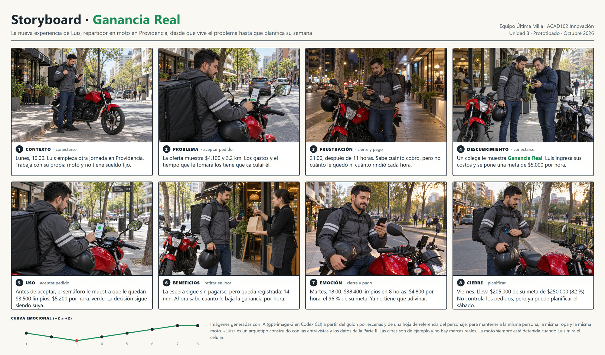
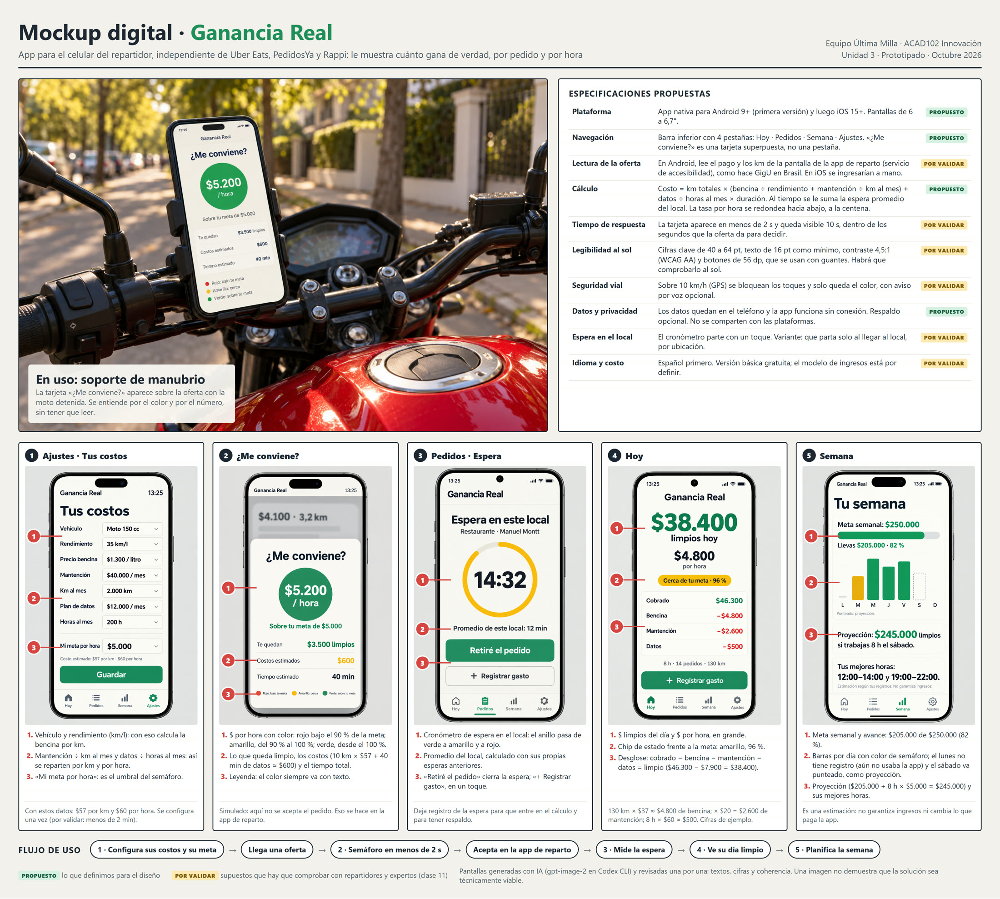

Prototipo · Ganancia Real
Equipo Última Milla · ACAD102 Taller de Innovación y Emprendimiento II · UNAB · Unidad 3, Prototipado
Video de la experiencia (47 s)
Storyboard final · 8 escenas
Abre la imagen para verla en alta resolución: storyboard.png


Mockup digital anotado
Abre la imagen para verla en alta resolución: mockup.png


Imágenes generadas con IA (gpt-image-2 en Codex CLI). «Luis» es un arquetipo y las cifras son de ejemplo. Una imagen no demuestra que la solución sea técnicamente viable.